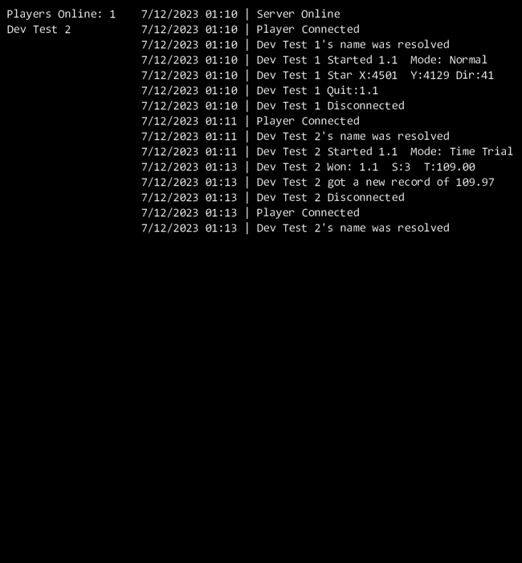

This shader applies a texture to the wall objects seamlessly.
Effect Example
Shader Code
//Vertex Shader
attribute vec3 in_Position; // (x,y,z)
attribute vec4 in_Colour; // (r,g,b,a)
attribute vec2 in_TextureCoord; // (u,v)
varying vec2 v_vTexcoord;
varying vec4 v_vColour;
varying vec2 v_vPos;
void main() {
vec4 object_space_pos = vec4( in_Position.x, in_Position.y, in_Position.z, 1.0);
gl_Position = gm_Matrices[MATRIX_WORLD_VIEW_PROJECTION] * object_space_pos;
v_vColour = in_Colour;
v_vTexcoord = in_TextureCoord;
v_vPos = in_Position.xy;
}
//Fragment Shader
varying vec2 v_vTexcoord; // (x,y,z)
varying vec4 v_vColour; // (r,g,b,a)
varying vec2 v_vPos; // (x,y)
uniform vec4 uvs; // (x,y,z,w) (left, top, width, height)
uniform vec2 texture_size; //(inverse)
uniform sampler2D texture;
void main() {
vec2 texCoord = fract(v_vPos * texture_size) * uvs.zw + uvs.xy; //(tile position) * (texture size) + (texture_offset)
vec4 new_texture = texture2D(gm_BaseTexture, texCoord);
vec4 old_texture = texture2D(gm_BaseTexture, v_vTexcoord);
gl_FragColor = vec4(new_texture.rgb, v_vColour.a * old_texture.a);
}
Starship Captain has lasers as obstacles. These lasers have a dynamic distance. The following code is responsible for determining the new length of a laser if it has been interupted or if the object it was colliding with has moved.
Effect Example

Laser Collision Point Detection
Code
//Laser Collision Detection
/*EndPoint refers to furthest point the laser is reaching
sourceXY refers to the start position of the laser*/
if ((inView = 1){
endPointCurrent = collisionPoint(sourceX, sourceY, angle, length + 1) //Return object ID at end point or 0 if none. +1 to account for rounding/floating point errors
endPointDifference = endPointOld - endPointCurrent
if (endPointCurrent = 0)
length = maxLength
betweenPoint = scr_collisionLineVector(sourceX, sourceY, angle, length - 1) // -1 to exclude current collision
if ((endPointDifference != 0) or (betweenPoint != 0))
length = scr_findCollisionPoint(sourceX, sourceY, angle, length)
endPointOld = endPointCurrent
}
///scr_findCollisionPoint(sourceX, sourceY, angle, length)
var testX = sourceX
var testY = sourceY
var lengthX, lengthY
while( abs(length) > 1){
length *= 0.5
if (scr_collisionLineVector(testX, testY, angle, length)) = 0{
lengthX = lengthdir_x(length, angle) //GM way to do sin/cos
lengthY = lengthdir_y(length, angle)
testX += lengthX
testY += lengthY
}
}
var newLength = abs(point_distance(sourceX, sourceY, _testX, _testY)) //GM way to find vector magnitude
return newLength
Starship Captain has an analytics server. The server tracks various metrics and stores leaderboard data. Logs are kept for each day and seperate logs are kept for each user. Obstacle collision coordinates/vectors are stored per incident, per level.
Server Console

Server Console
Data Collected
- Connections
- Disconnections
- Usernames
- Starting level and mode
- Quiting a level
- Winning a level, time, and stars
- Obstacle collision x, y, and ships direction
Code Example
//scr_incoming
buffer = argument0
socket = argument1
buffer_seek(buffer, buffer_seek_start, 0)
messageId = buffer_read(buffer, buffer_u8)
switch (messageId) {
case NAME: scr_name_s(buffer, socket); break;
case SENDRECORD: scr_sendrecord(buffer, socket); break;
case GETRECORD: scr_getrecord(buffer, socket); break;
case GETBOARD: scr_getboard(buffer, socket); break;
case WIN: scr_win(buffer, socket); break;
case STARLOSS: scr_starloss(buffer, socket); break;
case LEVELLOSS: scr_levelloss(buffer, socket); break;
case LEVELSTARTED: scr_levelstart(buffer, socket); break;
case LEVELQUIT: scr_levelquit(buffer, socket); break;
case VERSION: scr_version(buffer, socket); break;
}
//scr_starloss (Obstacle Collision)
buffer = argument0
socket = argument1
name = buffer_read(buffer, buffer_string)
zone = buffer_read(buffer, buffer_u8)
level = buffer_read(buffer, buffer_u8)
shipX = buffer_read(buffer, buffer_u32)
shipY = buffer_read(buffer, buffer_u32)
shipDir = buffer_read(buffer, buffer_u32)
logString = name + " Star X:" + string(shipX) + " Y:" + string(shipY) + " Dir:" + string(shipDir)
write_console(logString)
write_log(logString)
write_user(logString, name)
write_starLoss(zone, level, shipX, shipY, shipDir)
{kind=link}
{kind=link}
{kind=link}
{kind=link}
{kind=link}
{kind=link}